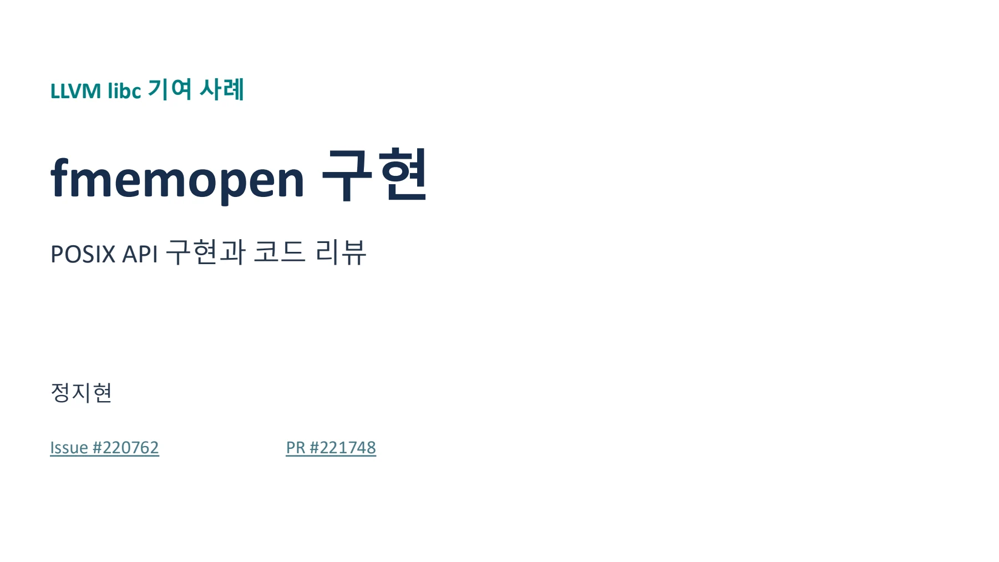
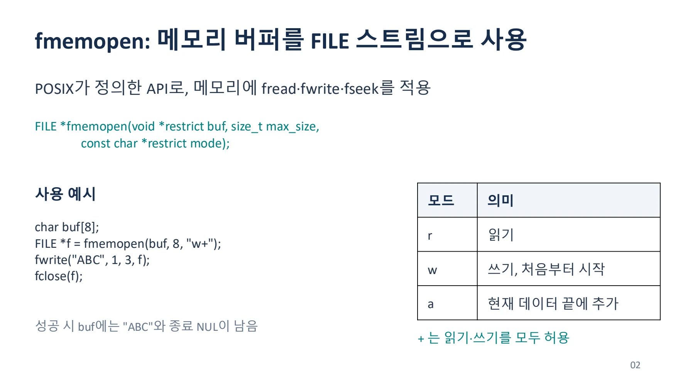
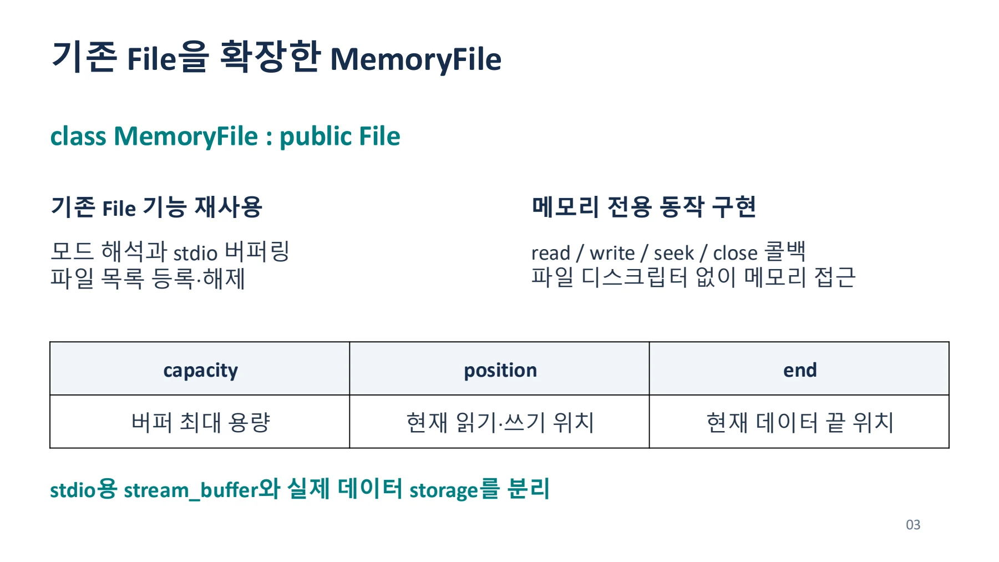
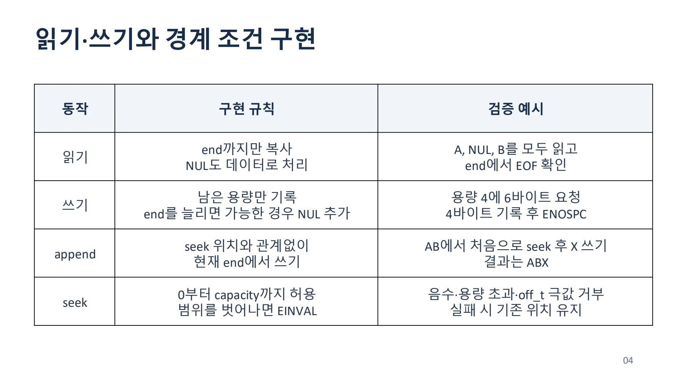
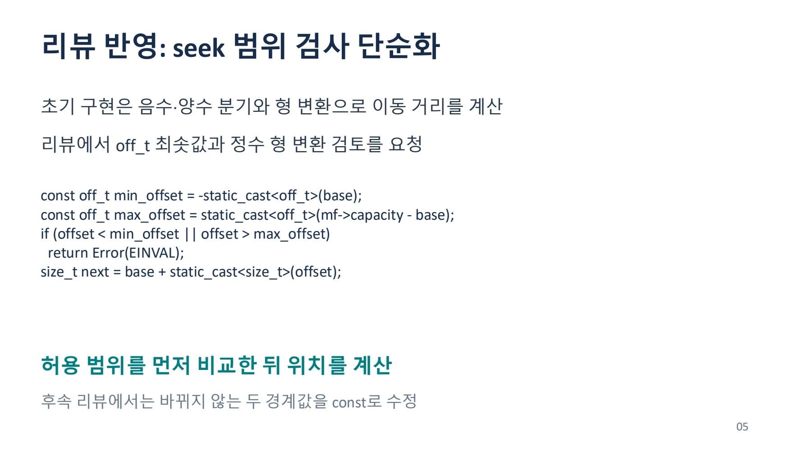
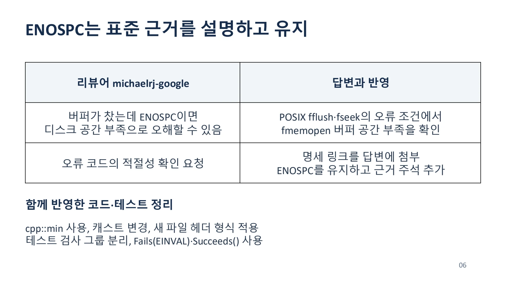

메모리 버퍼를 FILE 스트림으로 연결하기
fmemopen을 구현하며 POSIX 동작, 버퍼 경계, seek 범위와 오류 코드를 검토한다.
LLVM_fmemopen_.pdf의 전체 내용입니다. 설명·코드·표·검증 기록을 생략하지 않고 옮겼습니다. 그림 안의 문자 인식 결과에는 기호 오류가 있을 수 있어 이미지도 함께 제공합니다.
이 문서의 목차
LLVM libc 기여 사례 / fmemopen 구현 / POSIX API 구현과 코드 리뷰
LLVM libc 기여 사례
fmemopen 구현
POSIX API 구현과코드리뷰
정지현
Issue #220762
PR #221748
페이지 배치·기호·도식 확인하기


fmemopen: 메모리 버퍼를 FILE 스트림으로 사용 / POSIX가 정의한 API로, 메모리에 fread·fwrite·fseek를 적용 / FILE *fmemopen(void *restrict
fmemopen: 메모리버퍼를FILE 스트림으로사용
POSIX가 정의한 API로, 메모리에 fread·fwrite·fseek를 적용
FILE *fmemopen(void *restrict buf, size_t max_size,
const char *restrict mode);사용예시
char buf[8]; FILE *f = fmemopen(buf, 8, "w+"); fwrite("ABC", 1, 3, f); fclose(f);
성공시buf에는"ABC"와종료NUL이남음
모드 | 의미 |
|---|---|
r | 읽기 |
w | 쓰기, 처음부터시작 |
a | 현재데이터끝에추가 |
+ 는읽기·쓰기를모두허용
02
페이지 배치·기호·도식 확인하기


기존 File을 확장한 MemoryFile / class MemoryFile : public File / 기존 File 기능 재사용 메모리 전용 동작 구현
기존 File을 확장한 MemoryFile
class MemoryFile : public File
기존File 기능재사용
모드해석과stdio버퍼링 파일목록등록·해제
메모리전용동작구현
read / write / seek / close 콜백 파일디스크립터없이메모리접근
capacity | position | end |
|---|---|---|
버퍼최대용량 | 현재읽기·쓰기위치 | 현재데이터끝위치 |
stdio용 stream_buffer와 실제 데이터 storage를 분리
03
페이지 배치·기호·도식 확인하기


읽기·쓰기와 경계 조건 구현 / 동작 구현 규칙 검증 예시 / end까지만 복사 A, NUL, B를 모두 읽고
읽기·쓰기와경계조건구현
동작 | 구현규칙 | 검증예시 |
|---|---|---|
읽기 | end까지만복사 NUL도데이터로처리 | A, NUL, B를모두읽고 end에서 EOF 확인 |
쓰기 | 남은용량만기록 end를늘리면가능한경우NUL 추가 | 용량4에6바이트요청 4바이트기록후ENOSPC |
append | seek 위치와관계없이 현재end에서쓰기 | AB에서처음으로seek 후X 쓰기 결과는ABX |
seek | 0부터 capacity까지 허용 범위를벗어나면EINVAL | 음수·용량초과·off_t극값거부 실패시기존위치유지 |
04
페이지 배치·기호·도식 확인하기


리뷰 반영: seek 범위 검사 단순화 / 초기 구현은 음수·양수 분기와 형 변환으로 이동 거리를 계산 / 리뷰에서 off_t 최솟값과 정수 형 변환 검토를 요청
리뷰반영: seek 범위검사단순화
초기구현은음수·양수분기와형변환으로이동거리를계산
리뷰에서off_t최솟값과정수형변환검토를요청
const off_t min_offset = -static_cast<off_t>(base);
const off_t max_offset = static_cast<off_t>(mf->capacity - base);
if (offset < min_offset || offset > max_offset)
return Error(EINVAL);size_t next = base + static_cast<size_t>(offset);
허용범위를먼저비교한뒤위치를계산
후속리뷰에서는바뀌지않는두경계값을const로수정 05
페이지 배치·기호·도식 확인하기


ENOSPC는 표준 근거를 설명하고 유지 / 리뷰어 michaelrj-google 답변과 반영 / 버퍼가 찼는데 ENOSPC이면 POSIX fflush·fseek의 오류 조건에서
ENOSPC는표준근거를설명하고유지
리뷰어 michaelrj-google | 답변과반영 |
|---|---|
버퍼가찼는데ENOSPC이면 디스크공간부족으로오해할수있음 | POSIX fflush·fseek의 오류 조건에서 fmemopen버퍼공간부족을확인 |
오류코드의적절성확인요청 | 명세링크를답변에첨부 ENOSPC를유지하고근거주석추가 |
함께반영한코드·테스트정리
cpp::min 사용, 캐스트변경, 새파일헤더형식적용 테스트 검사 그룹 분리, Fails(EINVAL)·Succeeds() 사용
06
페이지 배치·기호·도식 확인하기


검증과 머지 결과 / 11개 단위 테스트 / 모드별 초기 상태, 읽기·쓰기, append
검증과머지결과
11개단위테스트
모드별초기상태, 읽기·쓰기, append seek 경계값, 내부버퍼, 0바이트용량, 오류복구
2026.09.10 Merge, 이슈 종료
표준근거와경계값테스트를함께제시한기여
07
페이지 배치·기호·도식 확인하기

핵심 원리와 편집 주석
API와 사용 예
fmemopen은 메모리 버퍼를 FILE 스트림으로 연다. 호출자는 같은 스트림에 fread, fwrite, fseek 같은 인터페이스를 사용할 수 있다.
char buf[8];
FILE *f = fmemopen(buf, sizeof(buf), "w+");
fwrite("ABC", 1, 3, f);
fclose(f);
/* 성공하면 buf에는 ABC와 종료 NUL이 남는다. */MemoryFile의 상태
구현은 기존 File 클래스를 확장한다. 모드 해석, stdio 버퍼링, 파일 목록 관리는 재사용하고 메모리용 read·write·seek·close를 구현한다.
| 상태 | 의미 |
|---|---|
| capacity | 데이터 버퍼의 최대 용량 |
| position | 현재 읽기·쓰기 위치 |
| end | 현재 데이터 끝 위치 |
stdio stream_buffer와 실제 데이터 storage는 서로 다른 버퍼다. 읽을 때 NUL은 데이터이며 end에 도달하면 EOF가 된다.
쓰기와 seek의 경계
- 쓰기는 남은 용량까지만 수행한다.
- append 모드에서는 seek 위치와 관계없이 현재 end에서 쓴다.
- 새 end 뒤에 공간이 있으면 종료 NUL을 기록한다.
- seek는 0부터 capacity까지 허용한다.
- 실패한 seek는 이전 위치를 유지한다.
리뷰는 off_t 최솟값과 형 변환을 검토했다. 허용 offset의 최소·최대값을 먼저 비교하고 그다음 새 위치를 계산하는 형태로 단순화했다.
표준 근거와 테스트
버퍼 공간이 부족할 때 ENOSPC를 사용하는 이유를 리뷰에서 논의했다. 작성자는 POSIX의 fflush·fseek 오류 조건을 근거로 설명하고 코드에 주석을 추가했다.
자료는 모드별 초기 상태, 읽기·쓰기, append, seek 경계, 내부 버퍼, 0바이트 용량, 오류 복구를 포함한 11개 단위 테스트를 기록한다.
원자료에 기록된 병합일은 2026년 9월 10일이다. 이 기여의 중심은 API 동작과 경계 조건이며 실행 속도 향상 수치는 제시되지 않았다.
문서 전문과 버전
- PDFPDF 원자료 · 7쪽LLVM_fmemopen_.pdf
각 자료는 별도의 버전입니다. 같은 주제라도 구현 상태·설명 범위·수치가 다를 수 있습니다.
관련 이슈와 PR
구현·병합 상태와 측정값은 해당 제출 자료의 작성 시점 기준입니다.